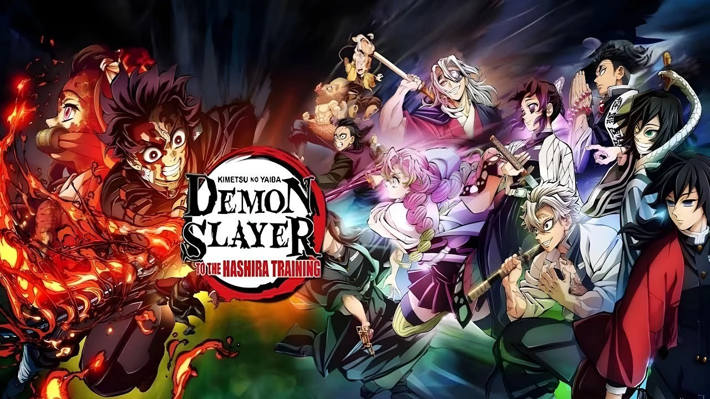

The Final Confrontation
Infinity Castle plunges Tanjiro, Nezuko, the Hashira, and the Demon Slayer Corps into Muzan’s otherworldly fortress—a shifting labyrinth of peril. Inside, they face the Upper Rank demons in intense, one-on-one battles that set the stage for the saga’s ultimate confrontation.
The film premiered in Japan on July 18, 2025, and shattered records—achieving the biggest opening day and single-day earnings in Japanese history, with over ¥7.31 billion ($49.5 million) in just four days. Within two weeks, it crossed ¥15 billion ($102 million), becoming the fastest to reach that milestone. By day 22, it climbed to around ¥20.3 billion (~$138 million), ranking as the 7th highest-grossing film ever in Japan.
A global rollout is underway: the film reached Taiwan and Southeast Asian markets starting August 8, with releases in North America, India, the UK, and Canada set for September 12, 2025—including IMAX formats.

Produced by:Akifumi Fujio, Masanori Miyake, Yūma Takahashi(Animated by: ufotable)
Animation Studio